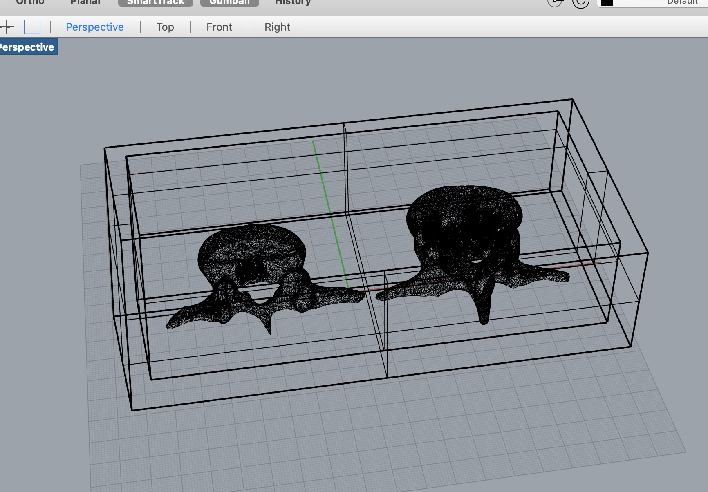
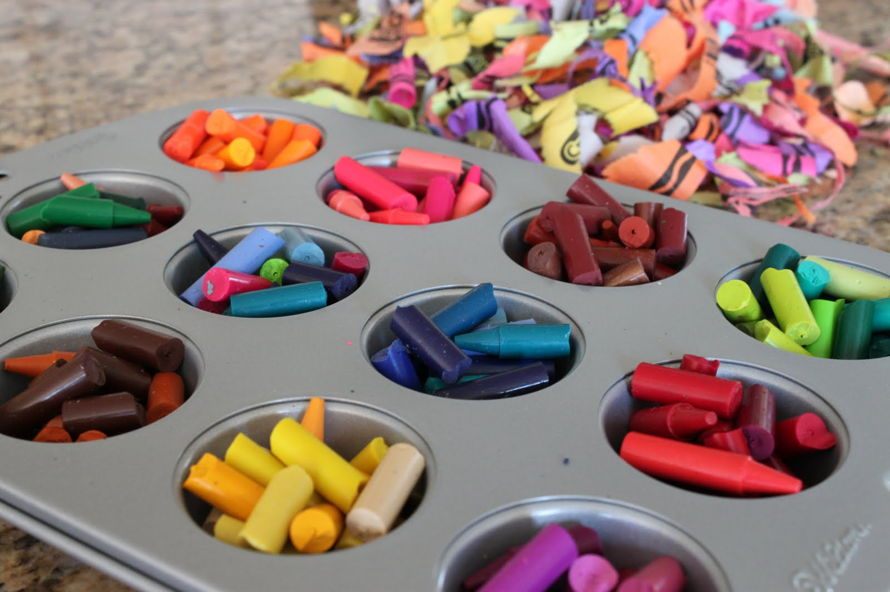

Assignment 6: Molding & Casting
I have worked for years with molds and casting and wanted to challenege myself a little on the form I chose to mold and cast. Most of the molds I've made have been off of solid forms, creating slump or hump molds, for clay. Knowing that I would be working with silicone offered me the opportunity to work with some new forms. I chose a CT scan of lumbar vertabrea because it's an interesting form and I thought it would look dynamic stacked in multiples.
Steps Taken:
I played around with using Rhino to do most of the work. Imported the stl file in, and started laying out the box using the method demonstrated in class.
I tried creating an extruded plane to bisect the object, whihc it did nicely, however I was unable to execute a split because my file was a mesh and Rhino can't cut a mesh.
I did some research and learned that rhino needs the object to be a solid in order to split so I moved the object to fusion 360 and started working on making it a solid by converting the mesh to brep.

I then tried to split it using construction, split commands. This made the rainbow wheel gods very unhappy. At some point a lightbulb came on and I realized that I had not tried to see if fusion 360 could split a mesh. More research suggested it was possible.
Fusion successfully split the mesh
I started designing a single mold for each side of the split object, using the parts to line up and make sure they were scaled to the same size.


I had another clarifying moment. I wanted to cast wax instead of plaster, so these would end up beaing vertabrae crayons and each example of cast crayons I looked up were single, ice cube style, molds. I think primarily because hot crayon is less than ideal to pour, but it also minimizes exposure to heated wax fumes. I settled on a new solution. I would still cast these as two parts, but do them in the same mold. Once the wax has melted and set (in the oven) then I would spot heat the bottoms and attach them together.
My completed mold in rhino and set up to a reasonable scale in Dremel. This is my stl file
I found the orginal CT scan here: https://www.embodi3d.com/files/file/58-l3-vertebra-from-ct-scan/ and the help on splitting here: https://forums.autodesk.com/t5/fusion-360-design-validate/split-stl-meshbody-for-3d-printing/td-p/6977514